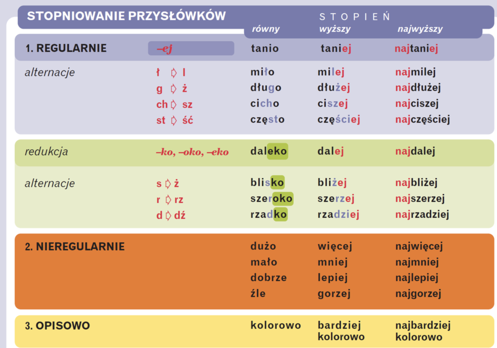

Gramatyka
Przysłówek
Co to jest wykrzyknik?
Przysłówek jest nieodmienną częścią mowy nazywającą właściwości czynności lub stanu. Łączy się z czasownikiem. Nie odmienia się, ale ulega stopniowaniu.
Przysłówek opowiada na pytania:
- jak? – ładnie, wesoło, spokojnie, nudno, strasznie, mocno, źle,
- gdzie? – blisko, daleko, wysoko, nisko, bokiem, wszędzie, nigdzie,
- kiedy? – dzisiaj, wczoraj, pojutrze, zimą, poprzednio.

- 00:00 Wstęp
- 00:11 Co to jest przysłówek i na jakie pytania odpowiada?
- 00:53 Przykłady przysłówków
- 01:24 Stopniowanie przysłówków
- 02:41 Pisownia przysłówków z „nie”
- 03:13 Podsumowanie

Stopniowanie przysłówka
Przysłówki pochodzące od przymiotników (te, które odpowiadają na pytanie: jak?) ulegają stopniowaniu, które pokazuje natężenie danej cechy. Uwaga! Przysłówki, które oznaczają niezmienną cechę (jak materiał wykonania bądź pochodzenie) nie ulegają stopniowaniu. Przykłady przysłówków, które się nie stopniują: stalowo, plastikowo, wiecznie.
| Stopień równy | Stopień wyższy | Stopień najwyższy | |
| Stopniowanie proste | ładnie szybko | ładniej szybciej | najładniej najszybciej |
| Stopniowanie nieregularne | dobrze źle | lepiej gorzej | najlepiej najgorzej |
| Stopniowanie opisowe | ludzko | bardziej ludzko | najbardziej ludzko |

Pisownia nie z przysłówkami
- Nie z przysłówkami w stopniu równym piszemy łącznie (niemiło, niedobrze, nieźle).
- Nie z przysłówkami w stopniu wyższym i najwyższym piszemy osobno (nie milej, nie najlepiej, nie gorzej, nie najwyraźniej).